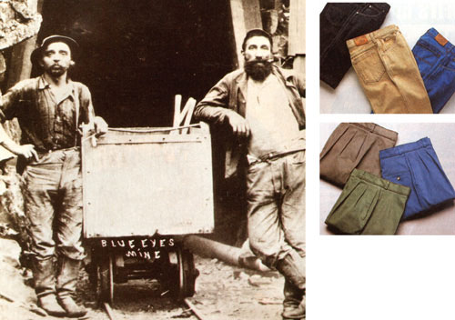

LEFT:COURTESY OSHKOSH B'GOSH RIGHT:COURTESY OF LAND'S END (ABOVE LEFT)Oskosh B'gosh still makes classic i-front overalls (BELOW RIGHT)...canvas pants are comfy after a wash. (ABOVE RIGHT)As sturdy as denim but less Publicized